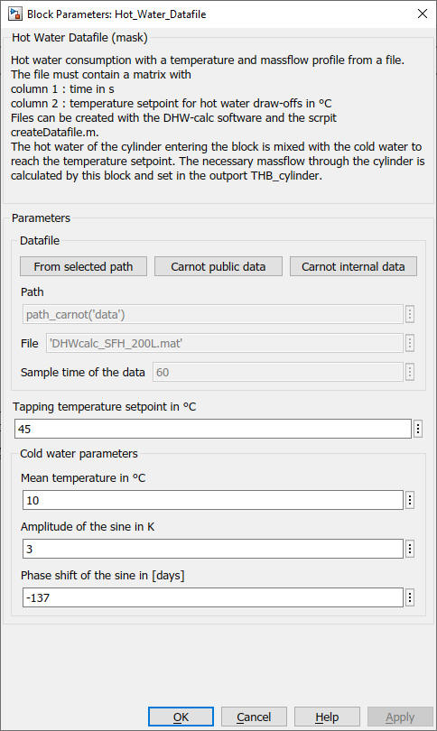
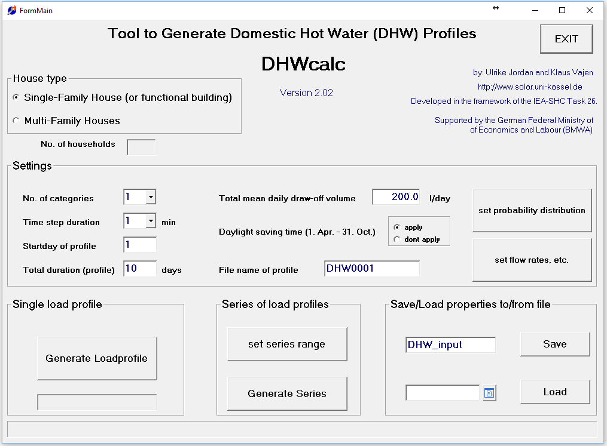

Hot_Water_Datafile
Path:
CARNOT/Load/Hot_Water_Tapping
Purpose:
Hot water consumption with a temperature and massflow profile from a file.
Description:
To create a tapping massflow in the THB the hot water of the cylinder entering
the block is mixed with the cold water to reach the temperature setpoint.
The necessary massflow through the cylinder is calculated by this block and
set in the outport to the cylinder. In the current model the block creates a
hot water consumption profile with a tapping temperature setpoint and a
massflow rate. The data is read from file which may be created with statistical
tools [Jordan, Vajen 2018].
The file must contain a matrix with
Files can be created with the DHW-calc software and the m-file createDatafile.m .
For further investigations there are different methods to evaluate the hot water comfort (see QAIST 2012).
Input:
| THBcylinder | : | Thermo-Hydraulic Bus of the hot water flow from the dhw cylinder |
Output:
| THB_cylinder | : | Thermo-Hydraulic Bus of the cold water flow to the dhw cylinder |
| THB_tap | : | Thermo-Hydraulic Bus of the mixed water flow to the tap |
| Tset | : | setpoint temperature in °C |
| DHWdat | : | data output of the block |
The data output of the block DHWdat can be used for data logging during a simulation.
DHWdat:
| THBcylinder | : | Thermo-Hydraulic Bus of the hot water flow from the dhw cylinder |
| THB_cylinder | : | Thermo-Hydraulic Bus of the cold water flow to the dhw cylinder |
| THB_tap | : | Thermo-Hydraulic Bus of the mixed water flow to the tap |
| Tset | : | setpoint temperature in °C |
| Tc | : | cold water temperature in °C |
Parameters and Dialog Box:

Application DHWcalc

Figure: View of the input parameters of DHWcalc [DHWcalc 2024]
Examples:
Open the example explorer from the Matlab command window
ExampleBrowser
or load the examples via the CARNOT library.
Literature:
Jordan, Ulrike & Vajen, Klaus. (2005). DHWcalc: PROGRAM TO GENERATE DOMESTIC HOT WATER PROFILES WITH STATISTICAL MEANS FOR USER DEFINED CONDITIONS.
DHWcalc: Download section for the software, University of Kassel, 2024
Characteristics:
| Direct Feedthrough | : | Yes |
| Sample Time | : | Inherited from driving block |
| Vectorized | : | No |